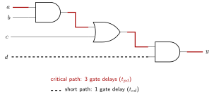

Logic synthesis turns an abstract description of circuit behavior, typically RTL in Verilog/SystemVerilog or VHDL, into a gate-level netlist targeting a specific implementation fabric. Hand methods (truth tables, K-maps) stop scaling around 4 to 6 variables; synthesis mechanized them, first with exact two-level minimization (Quine-McCluskey), then the Espresso heuristic minimizer, then the multi-level optimization systems of the 1980s (IBM’s LSS, Berkeley’s SIS) that became today’s commercial tools (Synopsys Design Compiler, Cadence Genus, and open-source Yosys). High-level synthesis pushes the input a level higher still, compiling C/C++/SystemC down to RTL first.
| Flow target | Maps RTL onto |
|---|---|
| ASIC | standard-cell library (AND/OR/NAND/flop cells from a foundry PDK) |
| FPGA | LUTs, flip-flops, and hard macros (block RAM, DSP slices, clock managers) |
Both flows perform the same steps:
generate blocks, and module hierarchy into a design
representation.// What you write: pure intent, no gate-level detail
module mux2 #(parameter W = 8) (
input logic [W-1:0] a, b,
input logic sel,
output logic [W-1:0] y
);
assign y = sel ? b : a;
endmoduleThe tool decides how that ternary becomes gates (AND-OR logic, a mux standard cell, or LUTs) from the target library and the timing constraints. This is why RTL is written behaviorally: you describe function, and synthesis plus STA guarantee it also meets timing on the real fabric.
Every combinational circuit has two delay characteristics:
| Term | Definition |
|---|---|
| Propagation delay | maximum time from an input change until the outputs reach their final value |
| Contamination delay | minimum time from an input change until any output starts to change |
says how long to wait before trusting the output; says how soon the old value stops being trustworthy. Between them the output can be anything.
Delays add along a path: the circuit’s is the sum of along the longest path (the critical path), and its the sum along the shortest.

A circuit can be data critical (critical path through the data inputs, e.g. a wide mux chain) or control critical (through a select/control signal). Which one it is tells you where to optimize: register the control earlier, or restructure the data path.
A flip-flop has its own timing aperture around the clock edge:
| Term | Definition |
|---|---|
| data stable at least this long before the edge | |
| data stable at least this long after the edge | |
| clock-to-Q propagation delay (max) | |
| clock-to-Q contamination delay (min) |
is the aperture time: data must hold steady through that whole window for a reliable capture.
For two flip-flops joined by logic of delay , sharing a clock of period : is the sequencing overhead, clock budget lost to the flops before any logic runs. Negative setup slack means the design cannot run at that frequency; the only fixes are faster logic (fewer levels, better structures), pipelining, or a slower clock.
The same pair also imposes a lower bound, independent of clock period: If the path is too fast, data launched by an edge races through and corrupts the capture of the previous cycle’s data at the same edge. A hold violation cannot be fixed by slowing the clock; the fix is adding delay (buffers) on the offending path. Well-designed flops have , so a bare flop-to-flop connection is already safe; hold problems arise mostly from clock skew (below) and very fast paths.

When a combinational block’s exceeds the setup ceiling, split it with a register in the middle: two faster blocks, each meeting timing at a shorter period.
// Before: one combinational block, too slow for the target period
assign mid = heavy_function_1(a);
assign y = heavy_function_2(mid);
// After: a pipeline register splits the work across two cycles
always_ff @(posedge clk) mid_reg <= heavy_function_1(a);
assign y = heavy_function_2(mid_reg);Latency rises by one cycle; throughput (results per second, once full) rises with the clock. The trade has a floor: each register costs area and sequencing overhead, and when the logic between registers shrinks toward a single gate, most of each cycle is spent synchronizing rather than computing. Throughput is work-per-cycle times cycles-per-second, and ever-finer pipelining eventually loses more on the first term than it gains on the second.
Each full-adder stage has carry-in-to-carry-out delay , so a 32-bit ripple adder needs For a target of 1 G adds/s (one per ns), split into four 8-bit slices, each followed by a register: per slice, leaving 200 ps for sequencing overhead.
// Four 8-bit slices, each followed by a pipeline register. The easy-to-miss
// detail: not-yet-processed operand bits must be registered forward at every
// stage too, or slice 2 pairs THIS cycle's bits 16-23 with a carry from an
// EARLIER input's bits 0-15.
module pipelined_adder32 (
input logic clk,
input logic [31:0] a, b,
input logic cin,
output logic [31:0] sum,
output logic cout
);
logic [31:0] a_r [4], b_r [4]; // operand bits arriving at stage i
logic [3:0] carry; // carry INTO slice i
logic [31:0] sum_r;
assign a_r[0] = a;
assign b_r[0] = b;
assign carry[0] = cin;
genvar i;
generate
for (i = 0; i < 4; i++) begin : slice
logic [7:0] s8;
logic c8;
assign {c8, s8} = a_r[i][8*i+7:8*i] + b_r[i][8*i+7:8*i] + carry[i];
always_ff @(posedge clk) begin
sum_r[8*i+7:8*i] <= s8;
if (i < 3) begin
carry[i+1] <= c8; // registered carry feeds the next slice
a_r[i+1] <= a_r[i]; // operands forwarded unchanged, just delayed
b_r[i+1] <= b_r[i];
end
end
end
endgenerate
assign sum = sum_r;
assign cout = carry[3];
endmoduleA pipeline register must capture everything later stages
will need, not just the signal that motivated inserting it. Mixing a
stage-2 signal with a stage-3 signal synthesizes and simulates happily
and computes nonsense: a stale operand paired with a carry that has
moved on. Naming signals by pipeline stage (the
a_r/b_r indexing above) is the standard
discipline for catching this.
Register insertion works on feedforward paths. It does not work on feedback:
always_ff @(posedge clk or posedge reset)
if (reset) acc <= '0;
else acc <= acc + data_in; // depends on its own previous valueSplitting this adder’s carry chain with a register does not just delay the result, it changes the computation (two interleaved half-sums instead of one running sum). Feedback loops (accumulators, counters, FSM next-state logic) are the hard limit on clock frequency: speeding one up requires redesigning the arithmetic itself (e.g. a carry-save or lookahead structure), not inserting registers.
Real clock networks do not deliver the edge everywhere at once. For a launch flop A and capture flop B, Positive skew (capture clock late) helps setup and hurts hold: Deliberately delaying the capture clock to buy setup margin on one path is useful skew; the price is a tighter hold check on that same path, and the borrowed time must come from somewhere adjacent. Since sign and magnitude are hard to guarantee across a die, STA budgets an uncertainty that eats margin in both checks, which is why ASIC and FPGA clock trees are explicitly engineered (balanced H-trees, matched buffering) rather than routed like ordinary wires.
| Clock skew | Clock jitter | |
|---|---|---|
| Nature | spatial: different flops see the edge at different times | temporal: the same clock’s edges wander cycle to cycle |
| Source | unequal clock-tree paths and loads | PLL noise, supply (di/dt) noise, thermal |
| Constant? | roughly static for a given layout | random, time-varying |
| Useful? | can be intentional (useful skew) | never, pure margin loss |
STA lumps skew and jitter into a single clock uncertainty subtracted from the period before checking setup.
If a flop’s input changes inside its aperture, the output can settle into a metastable state, between logic levels, for an unbounded (usually short) time before randomly resolving. This is unavoidable when a signal crosses clock domains or arrives asynchronously: nothing guarantees the receiving flop’s aperture is respected. The mitigation is a 2-flop synchronizer: the first flop may go metastable, but it gets a full cycle to resolve before the second samples it.
The synchronizer makes a propagated metastable event astronomically unlikely, quantified as mean time between failures: where is the resolution time allowed (about one period minus setup), and are flop metastability constants, and , are the sampling and input-change rates. The exponential is why adding a flop helps so dramatically, and why fast clocks and busy inputs hurt; at high frequency a 3-flop chain is sometimes needed to push MTBF to years or centuries.
A 2-flop synchronizer is correct for a single bit only. Synchronizing each bit of a bus independently lets different bits resolve on different edges, so the receiver can see a value that was never sent. The technique depends on what crosses:
| What’s crossing | Technique | Why it works |
|---|---|---|
| single control bit | 2-flop synchronizer | one bit cannot be incoherent with itself |
| multi-bit control | mux-recirculation / multi-cycle path: sync a 1-bit enable, hold the bus stable | only the enable is synchronized; the bus is stable when sampled |
| counter / pointer | Gray-code before crossing | one bit changes per step, so a mis-sample yields old or new value, never garbage |
| streaming data | asynchronous FIFO, Gray-coded pointers | decouples the domains; pointers cross safely as Gray codes |
| handshake | req/ack, each synchronized into the other domain | any width, at round-trip latency cost |
The cardinal rule: never synchronize more than one bit of a related group independently. Either reduce the crossing to one bit, or guarantee only one bit changes at a time.
Reset release has the same metastability hazard. Two disciplines:
| Synchronous reset | Asynchronous reset | |
|---|---|---|
| Applied | sampled only at the clock edge | immediate,
always_ff @(posedge clk or negedge rst_n) |
| + | plain timing path, filters sub-cycle glitches, clean STA | works with no clock running (safe at power-up) |
| − | needs a running clock; adds a term to the data path | glitch-susceptible; release is a timing hazard |
Recovery and removal are the reset-release analogues of setup and hold: reset must release a minimum time before the edge (recovery) or stay asserted a minimum time after (removal), else the flop can go metastable. The standard fix asserts asynchronously but releases synchronously:
// Async-assert, sync-deassert reset synchronizer
logic rff1, rff2;
always_ff @(posedge clk or negedge rst_n_async) begin
if (!rst_n_async) {rff2, rff1} <= 2'b00; // async assert
else {rff2, rff1} <= {rff1, 1'b1}; // sync release, 2 edges
end
assign rst_n_sync = rff2; // distribute this clean resetGlitch-prone reset pads additionally get a glitch filter or Schmitt-trigger input, since an async reset fires on any pulse meeting the flop’s minimum reset width.
STA applies the setup/hold equations exhaustively to every path, across all conditions, with no simulation vectors. It is the signoff answer to “does the chip meet timing”.
The per-path number STA reports: Slack passes; negative slack is a violation. Worst negative slack (WNS) and total negative slack (TNS) summarize how badly and how widely a design misses. Closing timing means driving all slack non-negative with faster cells, fewer levels, pipelining, useful skew, or a lower frequency.
Clocks and I/O timing are declared in an SDC (Synopsys Design Constraints) file; STA then checks four path groups:
| Path group | From → to |
|---|---|
| reg → reg | launch flop → capture flop |
| in → reg | input port → first flop (set_input_delay) |
| reg → out | last flop → output port (set_output_delay) |
| in → out | pure combinational feed-through |
Not every topological path is a real timing path; undeclared exceptions cause false violations and over-constrained synthesis:
| Exception | Meaning | Example |
|---|---|---|
| false path | never functionally exercised, skip it | paths between unrelated async domains; a static config register |
| multicycle path | data gets cycles, not 1 | a result sampled every 4th cycle |
set_case_analysis |
pin constant in this mode, prune through it | a test-mode mux select |
An exception must reflect a real functional guarantee. A path declared false that can actually toggle is unchecked silicon: it fails silently in the field.
Timing must hold at every manufacturing and operating condition, so STA runs at multiple PVT corners (process, voltage, temperature):
| Check | Worst corner | Why |
|---|---|---|
| setup (max delay) | slow process, low V, high T | gates slowest, deadline hardest |
| hold (min delay) | fast process, high V, low T | gates fastest, race easiest |
On-chip variation (OCV) derating adds pessimism for device-to-device differences on one die. Signoff is multi-corner multi-mode (MCMM): every corner crossed with every functional mode (mission, test, low-power), which is why timing closure is a large part of tapeout cost.
Power is a first-class constraint alongside area and timing: it sets battery life in mobile, cooling cost in datacenters, and since the mid-2000s the ceiling on clock frequency itself; the end of frequency scaling was a power problem. It splits into two components:
| Component | Spent | Scales with |
|---|---|---|
| dynamic | only while signals switch | |
| static (leakage) | continuously, even idle | transistor leakage, worse as devices shrink |
Switching a node charges its load capacitance from the supply and later dumps the charge to ground, unrecovered:
| Term | Meaning | Lever |
|---|---|---|
| activity factor: probability a node switches per cycle (1 for the clock, ~0.1 typical logic, 0 gated) | clock/power gating, fewer glitches | |
| switched capacitance (gate + diffusion + wire) | smaller cells, shorter wires, fewer levels | |
| supply voltage | the quadratic term, the strongest lever | |
| clock frequency | run no faster than the workload needs |
Halving quarters dynamic power, which is why voltage scaling dominates low-power design.
For uncorrelated data a node’s activity is ; random data gives , and structured data is usually lower (upper bits of small values rarely switch). Glitches raise effective : a node that should settle once may transition several times per cycle as unequal-delay paths resolve, so low-glitch structure saves power, not just correctness. A second, smaller dynamic component is short-circuit power: during a transition both CMOS networks conduct briefly; normally under ~10%, minimized by keeping edge rates fast and balanced.
An idle circuit still leaks, and leakage grew from negligible to a major fraction of total power as devices shrank, which is why “turn the clock off” stopped being sufficient.
| Source | Cause |
|---|---|
| subthreshold | current through an “off” transistor; exponentially worse as drops |
| gate | tunneling through the thin gate dielectric (mitigated by high-k) |
| junction | reverse-biased junction current (BTBT, GIDL) |
The stack effect: a series stack of off transistors leaks about 10x less than one off transistor, so a gate’s leakage depends on its input values; idle gates can be parked in low-leakage input states.
The highest-value RTL technique. The clock has and huge capacitance, so it dominates dynamic power. Gating ANDs it with an enable, stopping it into idle blocks:
always_ff @(posedge clk) if (en) q <= d; // synthesis infers a clock gateThe enable must only change while the clock is low or the gated clock
glitches, which is why assign gclk = en & clk is never
written directly: the correct structure is the library’s
integrated clock gating (ICG) cell, an enable latch
(transparent while the clock is low) feeding the AND.
| Style | How the ICG gets there |
|---|---|
| inferred | write the enabled register; synthesis inserts the ICG (portable, preferred) |
| instantiated | instantiate the library ICG cell by hand (explicit, library-specific) |
Gating high in the distribution tree turns off whole branches of the high-activity clock network (most savings); fine-grained per-register-bank gating saves less each but catches more idle cases.
The combinational counterpart: hold an expensive block’s inputs steady on cycles when its result is discarded, so its internal nodes never toggle.
assign a_g = use_mult ? a : a_held; // or a recirculating register / AND
assign b_g = use_mult ? b : b_held;
assign prod = a_g * b_g; // toggles only when the result is usedBoth gating styles exploit the same rule: if a result is not used, do not pay to compute it.
A sleep transistor disconnects an idle block from the supply entirely, killing leakage too (a clock-gated block still leaks). Costs wake-up latency and area, and the block loses state, so it suits coarse-grained, long-idle blocks.
Libraries offer the same cells at several : low-Vt is fast and leaky, high-Vt slow and quiet. Synthesis uses low-Vt only on critical paths and high-Vt everywhere with slack, getting near-low-Vt frequency at near-high-Vt leakage.
Exploits the term at runtime: lower the frequency to the workload’s minimum, then lower the voltage to the minimum supporting that frequency. With voltage roughly linear in frequency, so half the rate costs about an eighth the power, which is why DVFS is so effective for bursty workloads. A controller monitors load and temperature and picks the (V, f) point from the chip’s characterized table.
Power gating, multi-Vt, and DVFS require partitioning the design into independently controlled regions, structure the RTL does not express. Power intent is captured separately in UPF (Unified Power Format, IEEE 1801), the way SDC carries timing intent. A design divides into power domains, each on, off, or at its own voltage; crossings between domains in different states need special cells:
| Cell | Where | Job |
|---|---|---|
| isolation | output of a domain that can power down | clamp the floating output to a known 0/1 |
| level shifter | between domains at different voltages | translate logic levels |
| retention register | in a domain that powers down but keeps state | tiny always-on shadow latch preserves the value |
| power switch | in the domain’s supply | the sleep transistor, under UPF control |
| always-on logic | control, retention, isolation enables | must stay powered to manage the rest |
The legal domain-state combinations live in a power state table (PST); verification checks every active crossing has its isolation/level-shifting and that no impossible state is reachable. A missing isolation cell drives X into live logic, a missing level shifter reads a low-voltage 1 as 0, a missing retention register loses state across sleep: UPF makes these checkable early instead of discovered in silicon.
| Quantity | Definition | Bounds |
|---|---|---|
| power | energy per time (W) | thermal/cooling limit, supply current |
| energy | power × time (J) | battery life, cost per computation |
They can move oppositely: running faster at higher voltage raises power but can lower total energy if the chip finishes and sleeps sooner (“race to sleep”), while DVFS lowers power but extends runtime. A thermally limited datacenter optimizes watts; a phone optimizes joules per task. When neither can be sacrificed alone, designers minimize the energy-delay product (EDP).
| Reference: |
| [1] N. Weste & D. Harris, CMOS VLSI Design: A Circuits and Systems Perspective |
| [2] D. Harris & S. Harris, Digital Design and Computer Architecture |
| [3] W. J. Dally & R. C. Harting, Digital Design: A Systems Approach |
| [4] M. Arora, The Art of Hardware Architecture |
| [5] C. E. Cummings, SNUG papers on nonblocking assignments and clock-domain crossing |
| [6] IEEE Std 1801 (Unified Power Format) |
MIT License
Copyright (c) 2025 Sai Govardhan (saigov14@gmail.com)
Permission is hereby granted, free of charge, to any person obtaining a copy
of this software and associated documentation files (the "Software"), to deal
in the Software without restriction, including without limitation the rights
to use, copy, modify, merge, publish, distribute, sublicense, and/or sell
copies of the Software, and to permit persons to whom the Software is
furnished to do so, subject to the following conditions:
The above copyright notice and this permission notice shall be included in all
copies or substantial portions of the Software.
THE SOFTWARE IS PROVIDED "AS IS", WITHOUT WARRANTY OF ANY KIND, EXPRESS OR
IMPLIED, INCLUDING BUT NOT LIMITED TO THE WARRANTIES OF MERCHANTABILITY,
FITNESS FOR A PARTICULAR PURPOSE AND NONINFRINGEMENT. IN NO EVENT SHALL THE
AUTHORS OR COPYRIGHT HOLDERS BE LIABLE FOR ANY CLAIM, DAMAGES OR OTHER
LIABILITY, WHETHER IN AN ACTION OF CONTRACT, TORT OR OTHERWISE, ARISING FROM,
OUT OF OR IN CONNECTION WITH THE SOFTWARE OR THE USE OR OTHER DEALINGS IN THE
SOFTWARE.